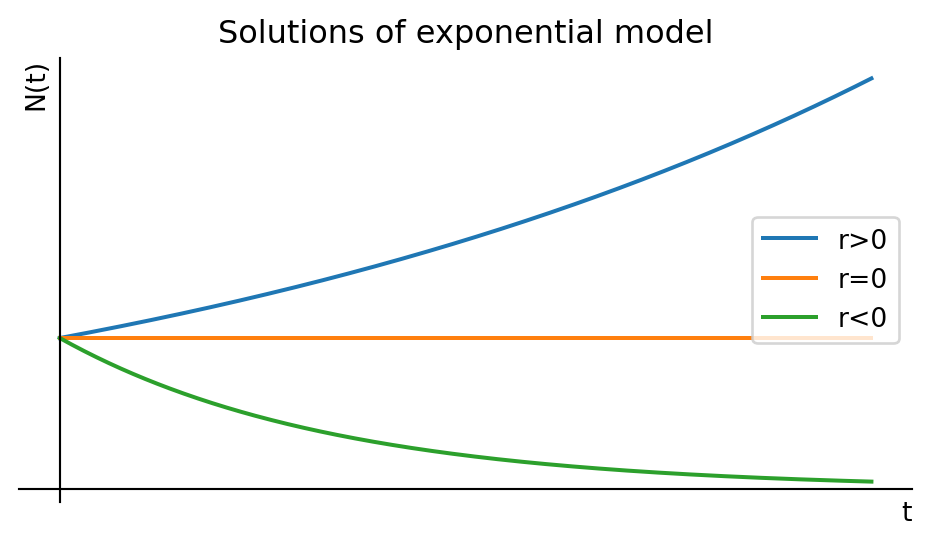
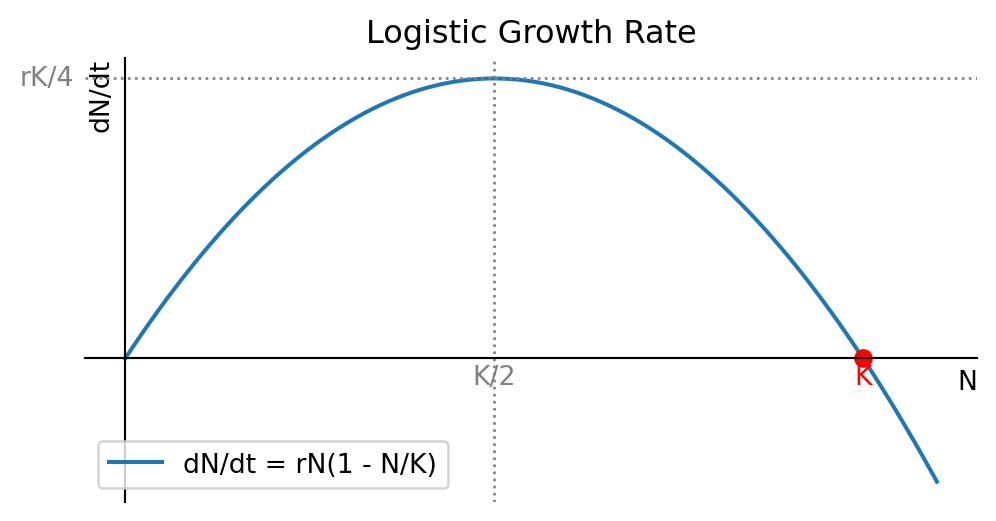
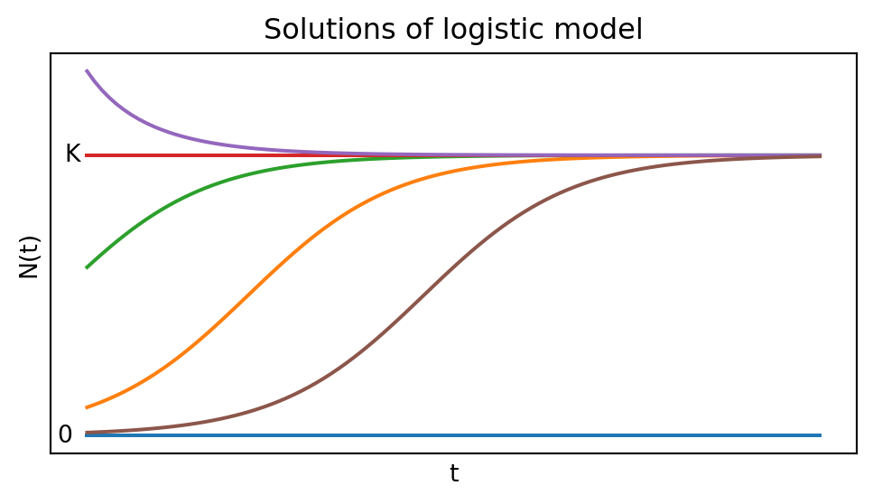
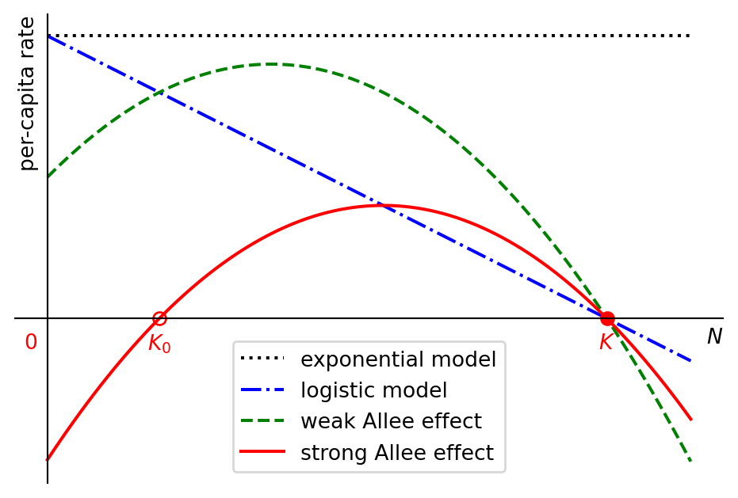
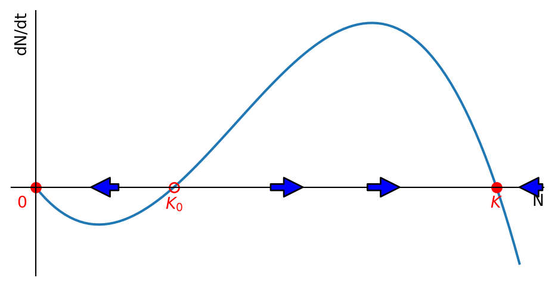
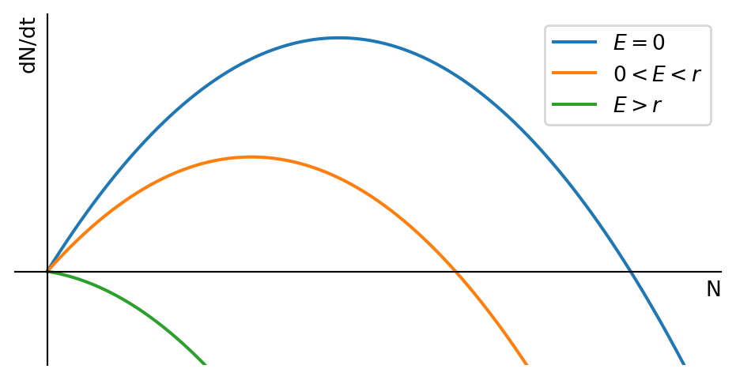
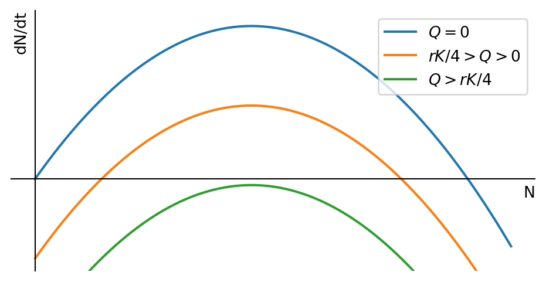

1 Continuous-time population models
We are interested in modelling the time evolution of the population number \(N(t)\), starting with the current population number \(N(0)=N_0\). Thinking about the processes by which the population number can change, we see that we can write the rate of change in the population number as \[ \frac{dN}{dt} = \text{birth rate} - \text{death rate} + \text{immigration rate} - \text{emigration rate}. \tag{1.1}\] The idea behind this approach is that if we understand how the rates at which these processes take place depend on the population number \(N\), then we can find \(N(t)\) by solving the above differential equation. Different assumptions about the individual rates will give us different models for N(t). We will look at some influential models now.
1.1 Exponential model
This is the simplest and oldest model, introduced by Thomas Robert Malthus in 1798. If we assume that the per-capita birth rate \(b\) and the per-capita death rate \(d\) are fixed constants, then the general differential equation Eq. 1.1 becomes the linear equation \[ \frac{dN}{dt}=bN-dN=rN, \tag{1.2}\] where we introduced the new parameter \(r=b-d\). This equation is easy to solve: \[ N(t)=N_0\,e^{rt}. \tag{1.3}\] If the birth rate exceeds the death rate and hence \(r>0\), the model predicts exponential growth. In the opposite case of lower birth rate than death rate the model predicts exponential decay of the population number towards extinction. Only when birth and death rates are perfectly equal can the population stay steady over time. We illustrate that in Figure 1.1.
1.2 Logistic model
Exponential population growth can not be maintained for ever. There will be a limit to the size of population that an ecosystem can maintain. When the population gets closer to this limit its growth rate will decrease, for example due to competition for limited food sources or space, or due to disease. This decrease in the growth rate is captured by the logistic equation \[ \frac{dN}{dt}=rN\left(1-\frac{N}{K}\right), \tag{1.4}\] where \(K\) is the carrying capacity of the environment. The extra factor of \(1-N/K\) decreases the growth rate towards zero as the population number \(N\) approaches the carrying capacity \(K\).
In Figure 1.2 make a plot of the right-hand side of the logistic equation Eq. 1.4 to see how the growth rate depends on the population number. While that figure was created by the computer, the plot is easy to sketch by hand because the function we want to sketch is simply an upside-down parabola. The maximum of the parabola is at \(N=K/2\) and the parabola crosses the \(N\)-axis at \(N=0\) and \(N=K\). This means that the population growth rate is zero at \(N=0\) and \(N=K\), and it is maximal at \(N=K/2\).

From the plot we see that the growth rate is zero at \(N=0\) and \(N=K\), and it is maximal at \(N=K/2.\) By realising that \(dN/dt\) is the slope of the graph of \(N(t)\) we can sketch a few solutions to the logistic equation Eq. 1.4 in Figure 1.3.

The logistic equation Eq. 1.4 can be solved analytically to give \[ N(t)=\frac{K}{1+\left(\frac{K}{N_0}-1\right)e^{-rt}}=\frac{N_0 K e^{rt}}{K+N_0(e^{rt}-1)}. \tag{1.5}\]
1.3 Allee effect
Warder Clyde Allee (1885-1955) was an American ecologist who studied the effects of population density on the growth rate of a population. He found that in some cases the per-capita growth rate can increase with \(N\). This is called the Allee effect. It can occur when the population is too small to find a mate, to find food, or to avoid predators.
Figure Figure 1.4 shows the per-capita growth rate as a function of the population number for exponential growth in black, for logistic growth in blue and two different growth rates exhibiting the Allee effect in green and red.

The green curve in Figure 1.4 shows a weak Allee effect, where the per-capita rate is small but possitive for small population sizes, then initially increases with the population size before then decreasing again as the population approaches its carrying capacity. The red curve shows a strong Allee effect, which is similar but so strong that the growth rate starts out not just small but actually negative for small \(N\).
The simplest model for the Allee effect is the logistic equation with a modified growth rate that includes another factor that decreases the growth rate for small \(N\): \[ \frac{dN}{dt}=rN\left(1-\frac{N}{K}\right)\left(\frac{N}{K_0}-1\right). \tag{1.6}\] If \(0<K_0<K\), this exhibits the strong Allee effect because the growth rate is negative when \(N<K_0\). This means that the population will be driven towards extinction when it is below the threshold size \(K_0\) and it will grow towards its carrying capacity when it is above \(K_0\). This is illustrated in Figure 1.5.

This phenomenon is important for conservation biology because it means that small populations are particularly vulnerable to extinction. It is also important for fisheries management because it means that the population can collapse if it falls below a certain threshold size. The phenomenon is called “critical depensation”. We will meet it again when we discuss harvesting later in this section.
1.4 General autonomous ODE model
The logistic model is a special case of a general autonomous ordinary differential equation (ODE) model \[
\frac{dN}{dt}=f(N),
\tag{1.7}\] where \(f(N)\) is a function of \(N\) only, not \(t\). The logistic equation Eq. 1.4 is an example of such a model with
\[
f(N)=rN\left(1-\frac{N}{K}\right).
\]
If \(f\) is Lipschitz continuous, then, given \(N(0)=N_0\), there exists a unique solution \(N(t)\) to the initial value problem Eq. 1.7. This is a consequence of the Picard-Lindelöf theorem.
We are interested in the steady states of the model, i.e. the values \(N^*\) for which \(f(N^*)=0\). These are the values of \(N\) for which the population number does not change. To determine the stability of the steady states, we can look near \(N^*\) by writing \(N(t)=N^*+n(t)\) with \(n(t)\) small. Then \[ \frac{dN}{dt}=\frac{dN^*}{dt}+\frac{dn}{dt} = f(N^*+n(t))\approx f(N^*)+f'(N^*)\,n(t). \] We now use that \(dN^*/dt=0\) and \(f(N^*)=0\) to find \[ \frac{dn}{dt}\approx f'(N^*)\,n(t). \] This is a linear equation for \(n(t)\) with solution \[ n(t)=n(0)e^{f'(N^*)t} \] and we can use the sign of \(f'(N^*)\) to determine the stability of the steady state:
If \(f'(N^*)<0\), then \(n(t)\) will decrease towards zero, and the steady state is stable.
If \(f'(N^*)>0\), then \(n(t)\) will increase away from zero, and the steady state is unstable.
If \(f'(N^*)=0\), then we need to look at higher order terms to determine the stability.
We illustrate this in the example of the logistic model. The fixed points are \(N^*=0\) and \(N^*=K\). The derivative of \(f(N)\) is \[ f'(N)=r\left(1-\frac{2N}{K}\right). \] So we find that \(f'(0)=r>0\) and \(f'(K)=-r<0\). This means that the steady state \(N^*=0\) is unstable and the steady state \(N^*=K\) is stable. This agrees with what we had already seen graphically in Figure 1.2 and Figure 1.3.
1.5 Harvesting a renewable resource
Ecologists model populations not only out of academic interest but also for practical purposes. Humans are interested in exploiting the natural resources. They want o harvest fish from the sea, to hunt deer in the forest, and to cut down trees in the jungle. They want to do this in a way that is sustainable, i.e. that does not lead to the extinction of the resource, while at the same time giving the highest yield.
My personal interest is in understanding how fish populations react to different kinds of fishing. I use coupled partial integro-differential equations for that purpose, but most fisheries management is based on simpler models and we get a good first idea by using the logistic model, which we will now modify to include harvesting.
1.5.1 Harvesting with fixed effort
We assume that in the absence of fishing the fish population number \(N(t)\) is governed by the logistic equation Eq. 1.4. We also assume that the fish are harvested at a rate \(E N(t)\), where \(E\) is the harvesting rate, which is determined by the effort that is put into fishing. This means that the rate of change in the fish population number is given by \[ \frac{dN}{dt}=rN\left(1-\frac{N}{K}\right)-EN = f(N). \tag{1.8}\] We can rewrite this equation in the form of a logistic equation with modified parameters: \[ \frac{dN}{dt}=rN\left(\left(1-\frac{E}{r}\right)-\frac{N}{K}\right). \tag{1.9}\] This makes it easy to read off the fixed points \(N^*=0\) and \(N^*=K\left(1-\frac{E}{r}\right)\). The nonzero fixed point gets smaller when fishing effort \(E\) increases. This is illustrated in Figure 1.6.

We are now interested in finding out at what level we should fish in order to achive the maximum sustainable yield (MSY). This is the level of fishing effort that gives the highest possible yield that can be sustained indefinitely. So we are interested in the yield at the non-zero fixed point \(N^*=K\left(1-\frac{E}{r}\right)\). The yield is the amount of fish that can be harvested per unit time, and it is given at the fixed point by \[ Y=EN^*=EK\left(1-\frac{E}{r}\right). \] We can find the maximum of \(Y\) by differentiating with respect to \(E\) and setting the derivative equal to zero: \[ \frac{dY}{dE}=K\left(1-\frac{2E}{r}\right)=0. \] We can solve this equation for \(E\) to find the optimal fishing effort \(E^*\): \[ E^*=\frac{r}{2}. \] The resulting maximum sustainable yield is \[ MSY=\frac{r}{2}K\left(1-\frac{r}{2r}\right)=\frac{rK}{4}. \]
1.5.2 Harvesting with fixed quote
Fisheries managers in the Mediterranean are aiming to control the fishing effort in order to achieve the maximum sustainable yield, and we have seen how to model that in the previous section. Fisheries in the North Sea or the North Atlantic however are instead managed by setting the total allowable catch (TAC) for the whole fleet. This is a fixed quota for the total amount of fish that can be harvested in a year. To model that policy we use the logistic equation with harvesting, but we replace the harvesting rate \(EN\) by a harvesting quota \(Q\): \[ \frac{dN}{dt}=rN\left(1-\frac{N}{K}\right)-Q. \tag{1.10}\] This is visualised in Figure 1.7.

We see that any non-zero quota leads to critical depensation, i.e., it introduces a critical threshold below which the population will collapse. This is a well-known problem in fisheries management, and it is the reason why the TAC is set to zero for some fish stocks. As the fishing quota is increased, the critical depensation threshold moves to higher population numbers and the stable steady state moves to lower population numbers. Eventually all non-zero fixed points disappear and the population collapses.
1.6 Exercises
Exercises marked with a * are essential and are to be handed in. Exercises marked with a + are important and you are urged to complete them. Other exercises are optional but recommended.
*Sketching solutions
Exercise 1.1 Consider the population model with carrying capacity and Allee effect given by the differential equation \[\frac{dN}{dt}=rN\left(1-\frac{N}{K}\right)\left(\frac{N}{K_0}-1\right).\] Here \(r>0\), \(K>K_0>0\) are constants. Simply by considering the shape of the right hand side, sketch a graph with several solutions for different initial conditions. Choose two initial conditions between \(0\) and \(K_0\), two initial conditions between \(K_0\) and \(K\) and one initial condition larger than \(K\). Note that the graph only needs to be qualitatively correct, similar to the rough sketch for the solutions of the logistic model sketched in the first lecture.
+Von Bertalanffy growth
Exercise 1.2 Assume the weight \(w(t)\) of an individual fish at time \(t\) is governed by the differential equation \[\frac{dw}{dt}=\alpha\,w^{2/3}-\beta w\] with initial condition \(w(0)=w_0\) (the weight at birth), and where \(\alpha\) and \(\beta\) are positive parameters depending on the fish species.
Without solving the differential equation, just thinking about fixed points and their stability, determine \(\lim_{t\rightarrow\infty}w(t)\).
Derive the linear first order ODE for \(u=w^{1/3}\) and solve it.
Use the solution for \(u\) to find the solution for \(w\).
Solving logistic equation
Exercise 1.3 By using separation of variables and partial fractions, solve the logistic equation \[\frac{dN}{dt}=rN\left(1-\frac{N}{K}\right)\] with initial condition \(N(0)=N_0\).
* Harvesting with fixed effort
Exercise 1.4 Consider a population \(N(t)\) that is described by the by the Gompertz model \[ \frac{dN}{dt} = \alpha N \log\frac{K}{N}, \] where \(\alpha\) and \(K\) are positive constants. You want to harvest this population, for example by hunting or fishing, with some effort \(E\). The rate at which you harvest individuals (which removes them from the population and hence results in an additional source of death) is proportional to the size of the population: \(Y = E N\). This is called the yield. Write down the differential equation for \(N(t)\) including this harvesting term. Determine the fixed points and their stability. Find the maximum sustainable yield, i.e., the maximum yield that can be sustained indefinitely.
Harvesting with fixed quota
Exercise 1.5 As in Exercise 1.4, consider a population \(N(t)\) that is described by the Gompertz model. Imagine that this describes a fish population in a lake where fishing is going to be introduced, and that you are tasked with setting the quota that limits the rate at which the fishers are allowed to take fish out of the lake. The fishers demand that you set the quota to the maximum sustainable level. What is the maximum sustainable quota according to the model? Would it be wise to give in to the demand of the fishers and set the quota at this level?
Wasps
Exercise 1.6 In a colony of the European Hornet there is a single queen that produces all the offspring. It produces two kinds of offspring: workers and reproducers. We’ll denote the number of workers alive at time \(t\) by \(n(t)\) and the number of reproducers by \(N(t)\). The workers are responsible for collecting food. They can’t breed themselves and they die in the winter. However they are necessary to allow the queen to reproduce because without the food that they are collecting the queen would have nothing to eat. So we need workers. But because they die in winter, they don’t help the survival of the colony in the long run. That’s where the reproducers come in. They don’t do any work, but they can, if they survive the winter, breed in the next spring as new queens.
So the queen now has a strategy of how to proceed: It first of all needs to produce workers, and from time zero to time \(t_c\) it only produces workers. We assume that the birth rate is proportional to the number of workers, so that the total birth rate of workers is \(r n(t)\) for some constant \(r>0\). The queen then switches to producing only reproducers from time \(t_c\) up to the start of winter at time \(T\) and we assume that the total birth rate of reproducers is \(R n(t)\) for some constant \(R>0\). We also assume that until the start of winter there are no deaths.
What is the optimal time \(t_c\) at which the queen should switch from producing workers to producing reproducers in order to achieve the largest number of producers \(N(T)\) at the start of the winter and therefore to the largest number of wasps in the following year.
Wasps with death
Exercise 1.7 In the wasp example from question 1, assume that the worker wasps die at a constant per-capita rate \(d\) but the reproducers do not die. Also assume that at time t=0 there is one worker, n(0)=1. Keep the birth rates as in Exercise 1.6. Determine the number of workers \(n(t)\) for any time between \(t_c\) and \(T\). Determine the number of reproducers at the onset of winter at time \(T\). Derive the optimal time for the switchover time \(t_c\).